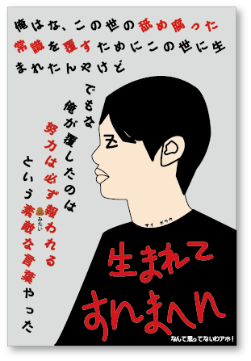

広西(Kansai)生まれ、広西育ち!エセ関西弁レベル100！関西を愛し、関西に愛されてる男!
音楽好き。中学からあえて流行りの物は聴かないという設定であらゆるジャンルの音楽を聞きました。沢山世に知られてない美しい音楽を聴くことによって、私は芸術に対してのセンスと感性を極めていました。特に日本の音楽(City Pop(山下達郎とか)、Fusion(CASIOPEAとか)、Math-Rock(toeとか)、Post-Rock(MONOとか))が好きで、大学4回生の時日本語を勉強し、日本へ留学することになりました。
ゲーム好き。特に死にゲーと呼ばれるDARK SOULSシリーズや仁王とか大好物。死を繰り返しの死にゲーをやることによって、私はストレスの耐性を極めて、鋼のメンタルを手に入れました。現在ポケモンSVどハマっています。
お笑い好き。ほぼ毎日バラエティー番組観ています。大阪時代はよく劇場に足を運んで漫才や、新喜劇などを観ていました。昔ロンゲだったので、漫才コンビの金属バットの友保さんとそっくり。劇場で自分、ビッグサイズ友保やんってツッコンまれました。お笑いを観ることを通して、私は日本の素晴らしい文化と日本語を覚えました。
アイドル好き（だった）。最初好きになったのは乃木坂、きっかけは坂道系のバラエティー番組でしたが、その後ハロプロ系(°C-ute)にどハマり、ヘビメタ系（BABYMETAL、PassCodeとか）もえらい好きです。アイドルを追っかけるため上京しましたが、コロナをきっかけで推しが卒業しまい、私もアイドルオタクを卒業しました。アイドルを追っかけることで、私は人との接する方、又は流行の捉え方を覚えました。
